From design to implementation
Progress overview
The OT Network Lab has moved beyond the initial Proxmox installation. The current environment now combines a dedicated virtualization host, a PNETLab network-emulation VM, a Palo Alto VM-Series firewall, virtual routers, and virtual switches.
The immediate objective is to create separate IT, industrial DMZ, and OT paths, then validate every layer before adding policies, simulated workloads, monitoring, and attack-and-defence exercises. All addresses visible in this article are private RFC 1918 lab addresses used inside an isolated learning environment.
The host, PNETLab VM, firewall VM, topology, routed interfaces, switch management interfaces, and Palo Alto zones have been created and checked. NTP reachability remains an open troubleshooting item.
Layer 1: virtual infrastructure
Validating the Proxmox foundation
The first check was at the Proxmox datacentre and node level. The host reports 16 CPU threads from an AMD Ryzen 7 5800X, approximately 47 GiB of RAM, local storage, and the dedicated lab-archive storage area. The dashboard also confirms that the PNETLab and Palo Alto virtual machines can run together.
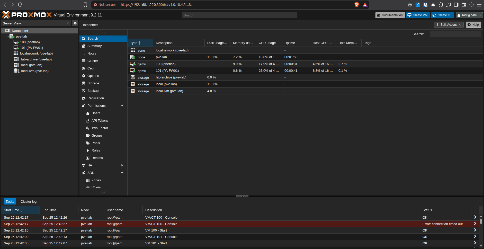
pve-lab node hosts PNETLab, PA-FW01, and the storage used by the lab.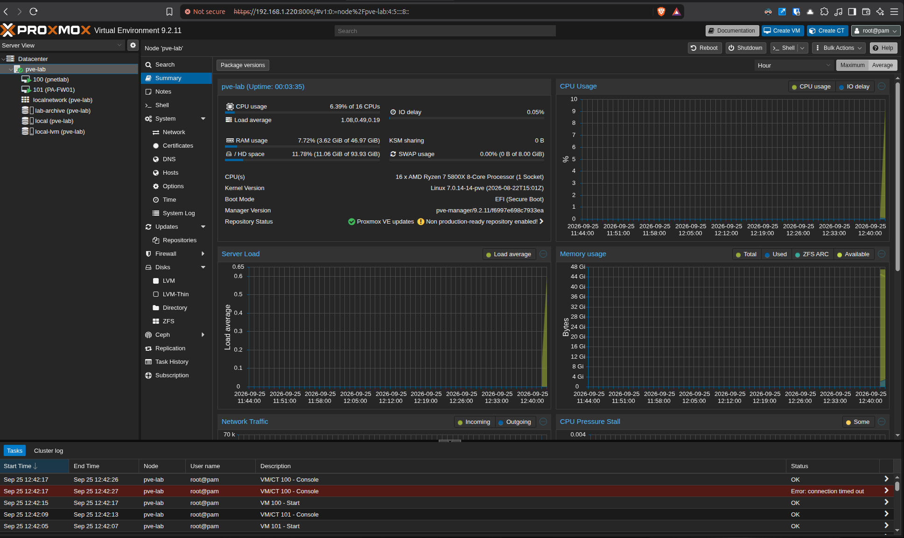
This capacity check matters because nested network emulation and firewall appliances consume resources differently from ordinary server VMs. Recording the baseline helps distinguish an application problem from host CPU, memory, storage, or I/O pressure later.
Layer 2: emulation platform
Preparing and validating PNETLab
The PNETLab VM is configured with four CPU cores, 8 GiB of RAM, a 100 GiB virtual disk, and four virtual network interfaces attached to separate Proxmox bridges. This creates the connection points required to move traffic between the emulated topology and the Palo Alto firewall VM.
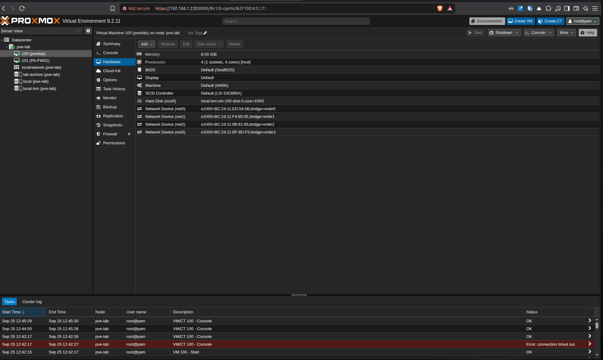
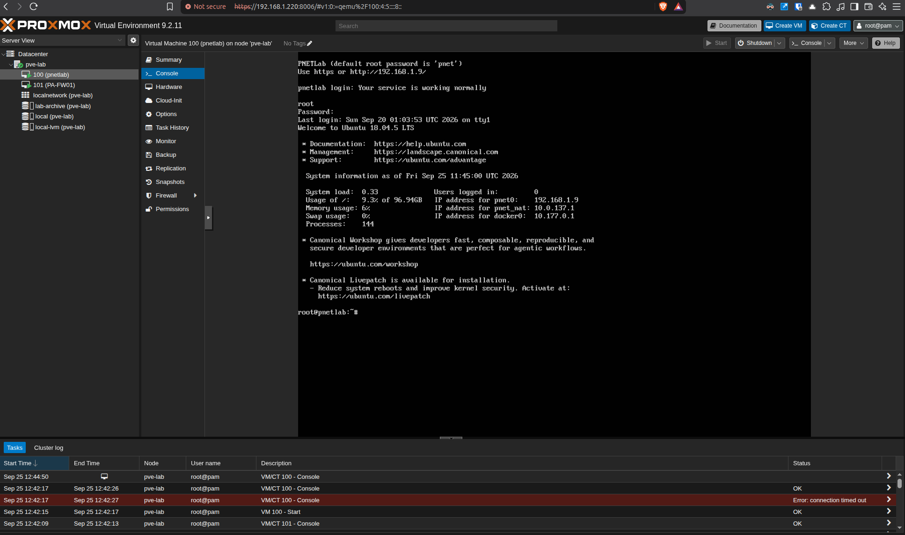
The firewall VM was also checked from Proxmox. PA-FW01 is running with four virtual CPUs, 6 GiB of RAM, and a 60 GiB system disk. Starting with explicit resource records makes later changes controlled and repeatable.
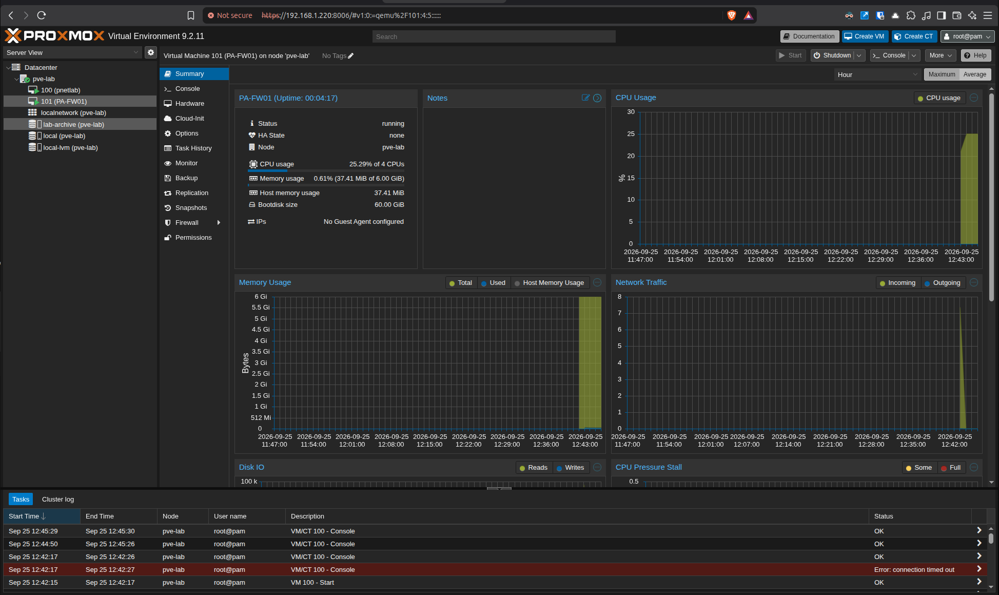
Layer 3: segmented topology
Building the IT, IDMZ, and OT paths
The PNETLab topology separates three paths at the firewall:
- IT path: an IT router and switch use the 10.10.10.0/30 transit and a management segment.
- Industrial DMZ: the IDMZ switch connects to the firewall through the 10.30.10.0/24 segment.
- OT path: the OT core and access switches connect through the 10.20.10.0/30 transit, with additional VLAN interfaces prepared for future OT functions.
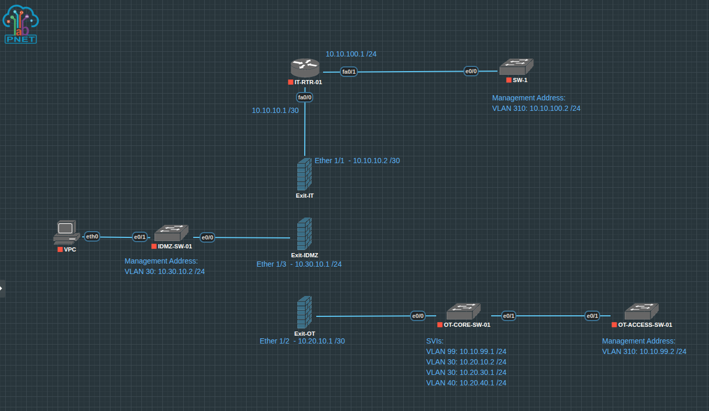
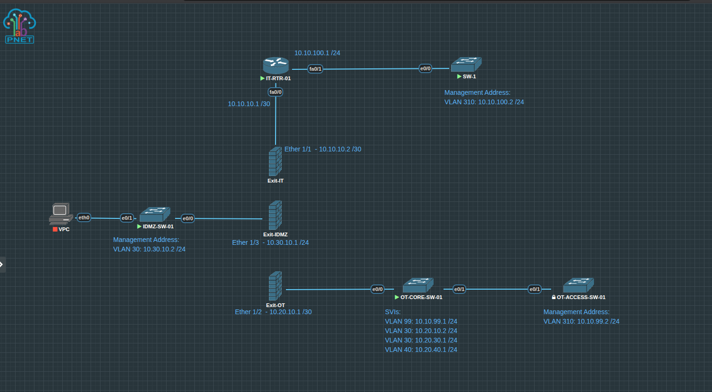
The before-and-after checkpoints are useful evidence. They show not only the intended design, but the transition from a drawn topology to active virtual links.
Layer 4: device checks
Checking routed and switched interfaces
Interface summaries were collected directly from the virtual devices. The IT router reports both links up/up: the firewall-facing transit at 10.10.10.1 and the switch-facing interface at 10.10.100.1. The OT core switch shows its routed management SVI online while the remaining planned VLAN interfaces are present for later activation.
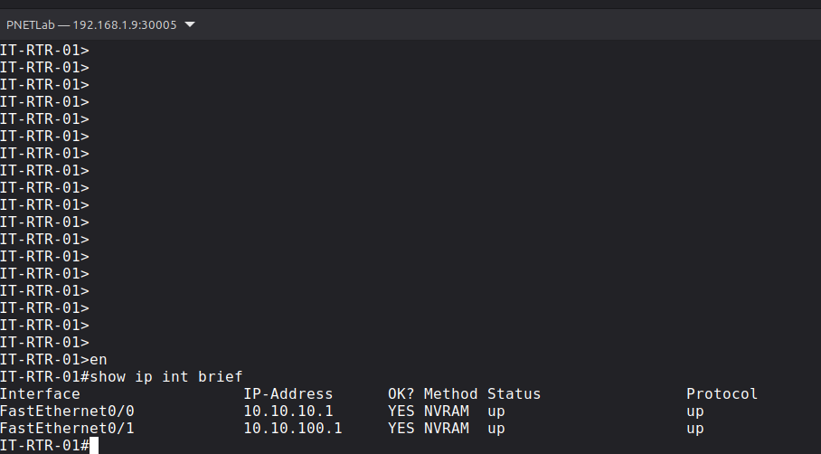
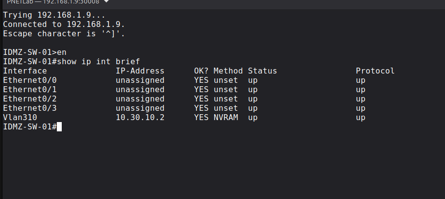
An interface that exists in the configuration is not automatically a working path. Recording administrative and protocol state at each checkpoint prevents assumptions and gives the lab a repeatable validation method.
Layer 5: security boundary
Mapping firewall interfaces to security zones
Three Layer 3 firewall interfaces are assigned to the lab virtual router. The IT, OT, and IDMZ interfaces use distinct networks and are mapped to separate Palo Alto security zones:
ethernet1/1— IT transit —Zone-ITethernet1/2— OT transit —Zone-OTethernet1/3— industrial DMZ —Zone-IDMZ
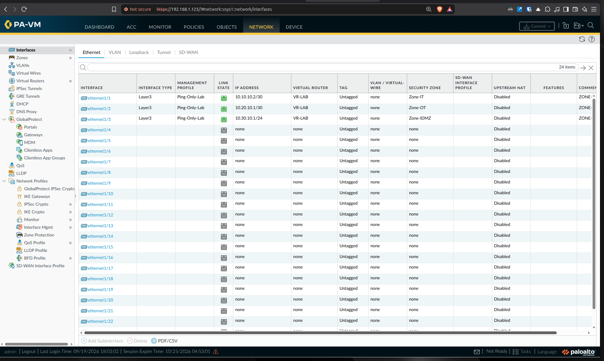
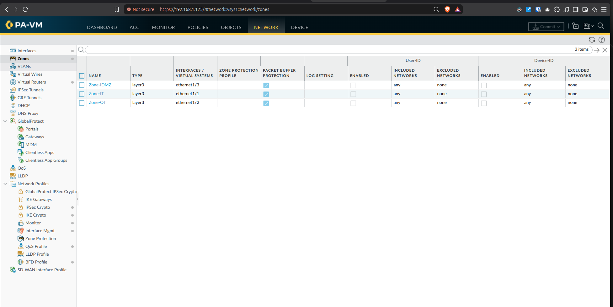
Why this is important
A topology becomes a security architecture only when communication boundaries are explicit. The zones provide the structure for controlled rules, logging, testing, and evidence about which flows are allowed between enterprise and operational systems.
Operational validation
Configuring NTP—and recording the failed check
Accurate time is essential for firewall logs, packet captures, incident timelines, and correlation across network devices. The firewall was configured with time.cloudflare.com as the primary NTP server and uk.pool.ntp.org as the secondary.
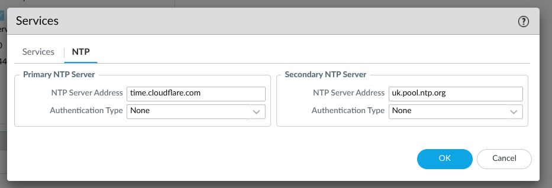
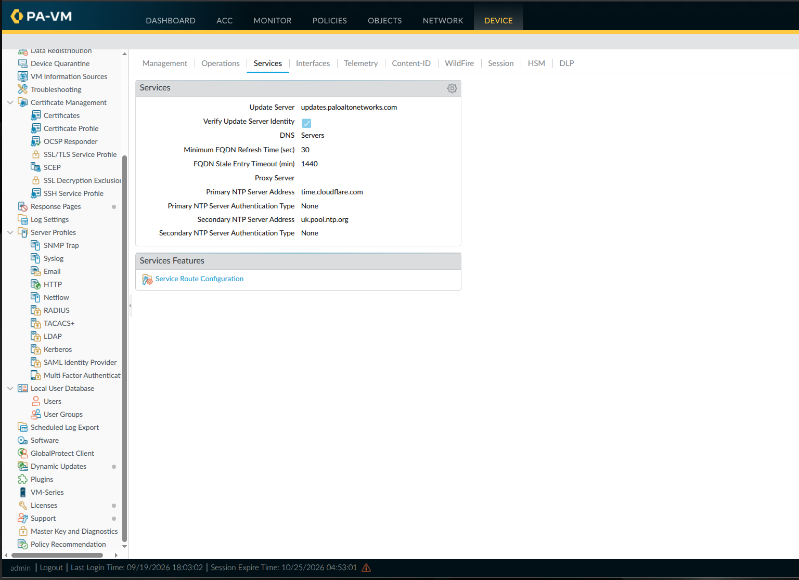
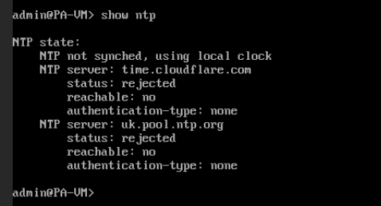
The failed result is valuable engineering evidence. The configuration exists, but the service is not working. The next investigation will verify DNS resolution, the management-plane service route, default-route reachability, and whether UDP port 123 can leave the lab.
Engineering reflection
Lessons learned and next steps
Validate every layer
Host health, VM resources, virtual bridges, emulated links, interface state, zone assignment, and application services each need their own check.
Keep failed evidence
The NTP result prevents a configuration screenshot from being mistaken for proof that the service is operational.
Activate OT VLANs deliberately
The planned OT SVIs will be enabled as simulated engineering, supervisory, and control assets are introduced.
Build policy from required flows
The next firewall rules will be based on documented communication needs rather than broad any-to-any access.
Next practical milestones
- Resolve DNS, routing, service-route, or UDP/123 issues preventing NTP synchronisation.
- Add inter-zone security policies and log both allowed and denied sessions.
- Bring the planned OT VLAN interfaces online with representative hosts.
- Add an engineering workstation, Linux monitoring tools, and simulated OT services.
- Capture repeatable reachability, policy, packet, and log evidence for each test.
Continue exploring
Follow the OT Network Lab as it grows.
The main case study connects this implementation update with the wider Purdue-style architecture, automation work, and repository.